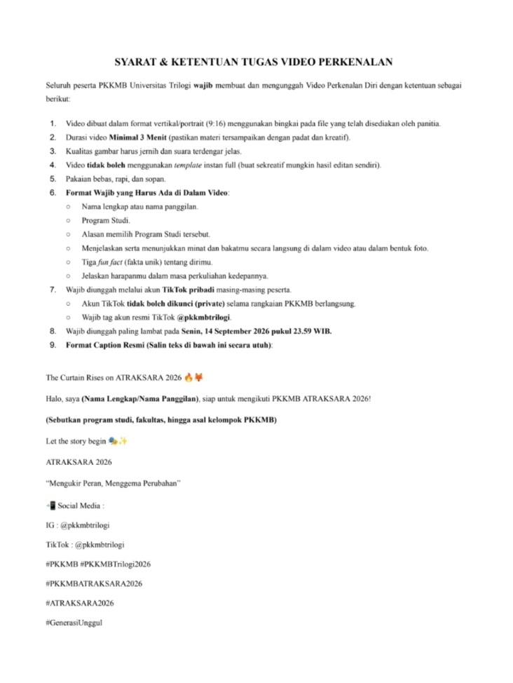

Format Wajib yang Harus Ada di Dalam Video: Nama lengkap atau nama panggilan. Format Wajib yang Harus Ada di Dalam Video: Program Studi. Format Wajib yang Harus Ada di Dalam Video: Alasan memilih Program Studi tersebut. Format Wajib yang Harus Ada di Dalam Video: Menjelaskan serta menunjukkan minat dan bakatmu secara langsung di dalam video atau dalam bentuk foto. Format Wajib yang Harus Ada di Dalam Video: Tiga fun fact (fakta unik) tentang dirimu. Format Wajib yang Harus Ada di Dalam Video: Jelaskan harapanmu dalam masa perkuliahan kedepannya.